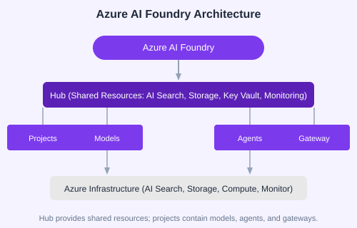

Azure AI Foundry is Microsoft's unified platform for building, deploying, and managing AI applications at scale. It brings together model catalog, agent service, RAG pipelines, API management, and governance under one hub.
Key Capabilities
Model Catalog  Access OpenAI, Meta, Mistral, Cohere, and open-source models
Agent Service  Build and host AI agents with tools, memory, and guardrails
AI Search  Hybrid vector + keyword search for RAG
AI Gateway  Rate limiting, content safety, and MCP support
Foundry IQ  Agentic retrieval with knowledge bases
API gateways with rate limiting and content safety
Multi-modal apps for document processing
Multi-agent orchestration and A2A communication

💡 Key Insight: Foundry unifies the entire AI lifecycle  from experimentation (model playground) to production (agent service with governance).
âœÂ︠Exercise: List three real-world applications you could build with Foundry. For each, identify which capabilities (agent, RAG, gateway, multi-modal) are most relevant.